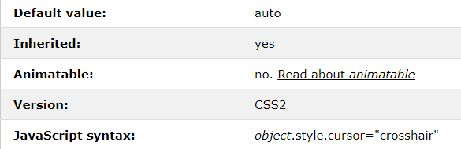

Blog post #1: Cursor Animations
My inspiration for this post came from stumbling upon my older brother's laptop from the late 2000's. Although it's long been dead, the only thing that I could recall from its grime-encrusted keys were the annoying cursor effects he downloaded. The type of effects that would cause an epileptic seizure.
I wanted to recreate this cursor effect from a by-gone era. While I don't plan to cause a seizure, it inspired me to try something similar with CSS animations.
I recalled seeing CSS Animations on W3
Schools. So this is where I first started looking into how to recreate it.
Here is a simple snippet for the type of effect I wanted to apply to my cursor in the form of a box:
The code snippet below shows a basic animation using @keyframes which gradually changes one CSS style to another.
@keyframes example {
15% {background-color: red;}
30% {background-color: orange;}
45% {background-color: yellow;}
60% {background-color: green;}
75% {background-color: blue;}
90% {background-color: indigo;}
100% {background-color: violet;}
}
This next part displays how to add an animation to a simple box div element.
.rainbow-box {
margin: 10px;
width: 100px;
height: 100px;
background-color: red;
animation-name: example;
animation-duration: 5s;
animation-iteration-count: infinite;
}
This all seemed simple enough, and I thought that I would just have to apply the same thing to the cursor element instead of a box. Stupidly, I didn't bother to read the cursor property definition.
 This error was a learning lesson in of itself. I shouldn't assume things are going to be
convenient for me, especially in niche scenarios.
My next step was to simply google what I wanted (the true solution to everything).
Upon doing so I stumbled upon this
video
which did what I wanted but with Javascript. The only problem was that I haven't worked with Javascript
beyond copy and pasting
simple scripts without looking into how they worked.
Luckily, after reviewing the video, the entire process seemed easy.
Below is the Javascript used to track the mouse:
let mouseCursor = document.querySelector(".cursor");
window.addEventListener('mousemove', cursor);
function cursor(e){
mouseCursor.style.top = e.pageY + 'px';
mouseCursor.style.left = e.pageX + 'px';
}
In the above code, I create a variable called "mouseCursor" which represents the class
where I apply the animation. Next, I added a listener (an item that tracks[listens for]
when a "mousemove" event occurs).
When an event occurs(when the mouse moves), the function catches the event and runs. This causes the
mouseCursor's style
for positioning to be modified. We then use this information to place the "mouseCursor" on top of the
regular cursor.
This is done through the "pageY" and "pageX" attributes we get from the event.
After creating the listener and function, I simply had to create ".cursor" in the css file and apply the annoying rainbow effect. As you hopefully can see, it was a success!
This entire process gave me a refresher on Javascript in a very simple and fun way. Although I don't plan to ever use something as ugly and annoying as this mouse cursor, at least I now know how to do it.
- Kevin Shu, CS 347 section 1